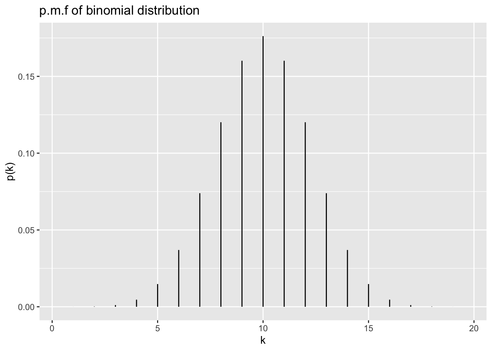
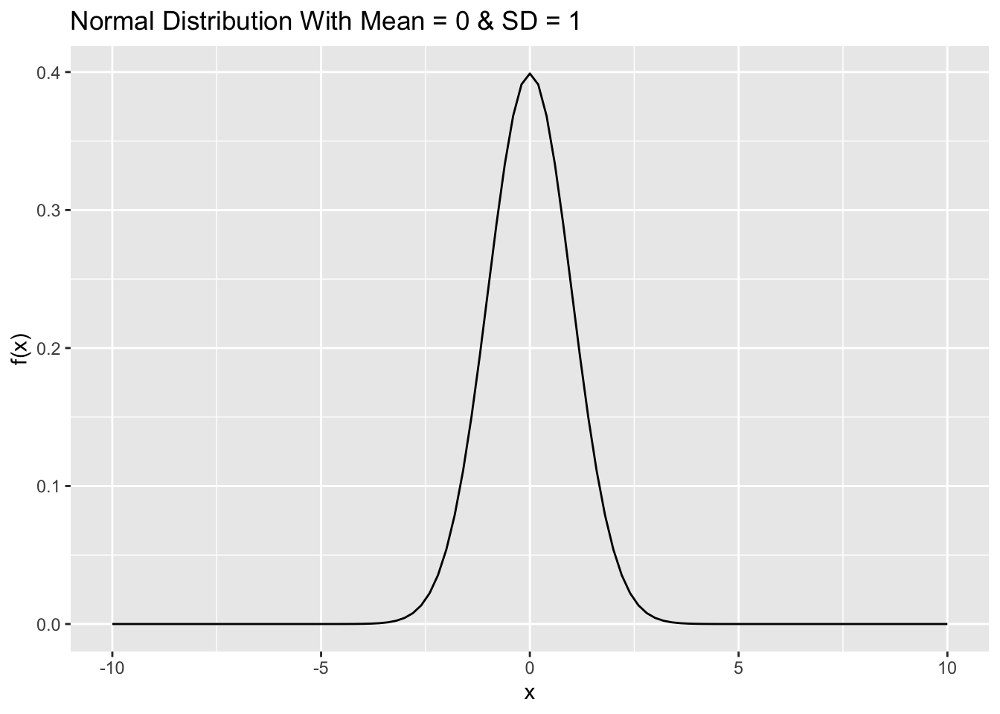
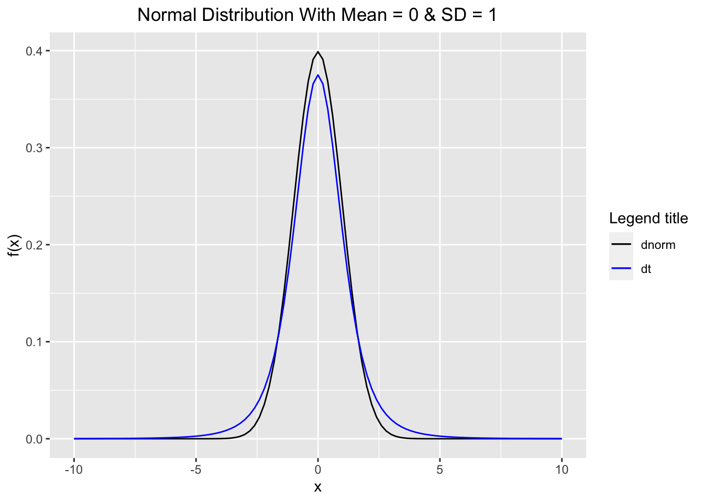
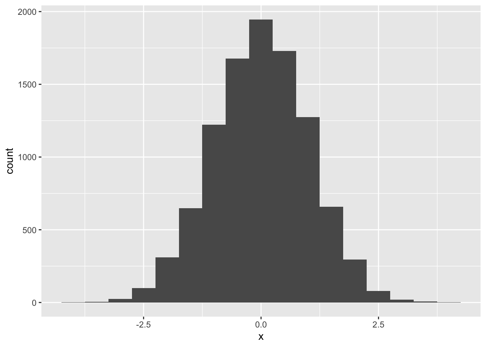
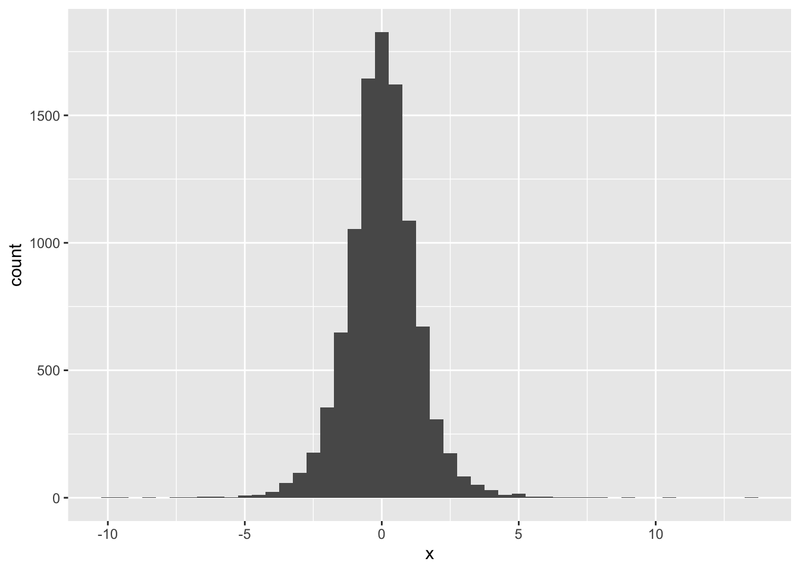

SCMA470 Risk Analysis and Credibility
2021-09-14
Chapter 1 Basic Probability Concepts
1.1 Random Variables
Definition 1.1 Let \(S\) be the sample space of an experiment. A real-valued function \(X : S \rightarrow \mathbb{R}\) is called a random variable of the experiment if, for each interval \(I \subset \mathbb{R}, \, \{s : X(s) \in I \}\) is an event.
Random variables are often used for the calculation of the probabilities of events. The real-valued function \(P(X \le t)\) characterizes \(X\), it tells us almost everything about \(X\). This function is called the cumulative distribution function of \(X\). The cumulative distribution function describes how the probabilities accumulate.
Definition 1.2 If \(X\) is a random variable, then the function \(F\) defined on \(\mathbb{R}\) by \[F(x) = P(X \le x)\] is called the cumulative distribution function or simply distribution function (c.d.f) of \(X\).
Functions that define the probability measure for discrete and continuous random variables are the probability mass function and the probability density function.
Definition 1.3 Suppose \(X\) is a discrete random variable. Then the function \[f(x) = P(X = x)\] that is defined for each \(x\) in the range of \(X\) is called the probability mass function (p.m.f) of a random variable \(X\).
Definition 1.4 Suppose \(X\) is a continuous random variable with c.d.f \(F\) and there exists a nonnegative, integrable function \(f\), \(f: \mathbb{R} \rightarrow [0, \infty)\) such that \[F(x) = \int_{-\infty}^x f(y)\, dy\] Then the function \(f\) is called the probability density function (p.d.f) of a random variable \(X\).
1.1.1 R Functions for Probability Distributions
In R, density, distribution function, for the Poisson distribution with parameter \(\lambda\) is shown as follows:
| Distribution | Density function: \(P(X = x)\) | Distribution function: \(P(X ≤ x)\) | Quantile function (inverse c.d.f.) | random generation |
|---|---|---|---|---|
| Poisson | dpois(x, lambda, log = FALSE) |
ppois(q, lambda, lower.tail = TRUE, log.p = FALSE) |
qpois(p, lambda, lower.tail = TRUE, log.p = FALSE) |
rpois(n, lambda) |
For the binomial distribution, these functions are pbinom, qbinom, dbinom, and rbinom. For the normal distribution, these functions are pnorm, qnorm, dnorm, and rnorm. And so forth.
library(ggplot2)
x <- 0:20
myData <- data.frame( k = factor(x), pK = dbinom(x, 20, .5))
ggplot(myData,aes(k,ymin=0,ymax=pK)) +
geom_linerange() + ylab("p(k)") +
scale_x_discrete(breaks=seq(0,20,5)) +
ggtitle("p.m.f of binomial distribution")
To plot continuous probability distribution in R, we use stat_function to add the density function as its arguement. To specify a different mean or standard deviation, we use the args parameter to supply new values.
library(ggplot2)
df <- data.frame(x=seq(-10,10,by=0.1))
ggplot(df) +
stat_function(aes(x),fun=dnorm, args = list(mean = 0, sd = 1)) +
labs(x = "x", y = "f(x)",
title = "Normal Distribution With Mean = 0 & SD = 1") 
1.2 Expectation
Definition 1.5 The expected value of a discrete random variable \(X\) with the set of possible values \(A\) and probability mass function \(f(x)\) is defined by \[\mathrm{E}(X) = \sum_{x \in A} x f(x)\]
The expected value of a random variable \(X\) is also called the mean, or the mathematical expectation, or simply the expectation of \(X\). It is also occasionally denoted by \(\mathrm{E}[X]\), \(\mu_X\), or \(\mu\).
Note that if each value \(x\) of \(X\) is weighted by \(f(x) = P(X = x)\), then \(\displaystyle \sum_{x \in A} x f(x)\) is nothing but the weighted average of \(X\).
Theorem 1.1 Let \(X\) be a discrete random variable with set of possible values \(A\) and probability mass function \(f(x)\), and let \(g\) be a real-valued function. Then \(g(X)\) is a random variable with \[\mathrm{E}[g(X)] = \sum_{x \in A} g(x) f(x)\]
Definition 1.6 If \(X\) is a continuous random variable with probability density function \(f\) , the expected value of \(X\) is defined by \[\mathrm{E}(X) = \int_{-\infty}^\infty x f(x)\, dx\]
- Let \(X\) be a continuous random variable with probability density function \(f (x)\); then for any function \(h: \mathbb{R} \rightarrow \mathbb{R}\), \[\mathrm{E}[h(X)] = \int_{-\infty}^\infty h(x)\, f(x)\, dx\] *
Theorem 1.2 Let \(X\) be a random variable. Let \(h_1, h_2, . . . , h_n\) be real-valued functions, and \(a_1, a_2, \ldots, a_n\) be real numbers. Then \[\mathrm{E}[a_1 h_1(X) + a_2 h_2(X) + \cdots + a_n h_n(X)] = a_1 \mathrm{E}[h_1(X)] + a_2 \mathrm{E}[h_2(X)] + \ldots + a_n \mathrm{E}[h_n(X)]\]
Moreover, if \(a\) and \(b\) are constants, then \[\mathrm{E}(aX +b) = a\mathrm{E}(x) + b\]
1.3 Variances of Random Variables
Definition 1.7 Let \(X\) be a discrete random variable with a set of possible values \(A\), probability mass function \(f(x)\), and \(\mathrm{E}(X) = \mu\). then \(\mathrm{Var}(X)\) and \(\sigma_X\), called the variance and standard deviation of \(X\), respectively, are defined by \[\mathrm{Var}(X) = \mathrm{E}[(X- \mu)^2] = \sum_{x \in A} (x - \mu)^2 f(x),\] \[\sigma_X = \sqrt{\mathrm{E}[(X- \mu)^2]}\]
Definition 1.8 If \(X\) is a continuous random variable with \(\mathrm{E}(X) = \mu\), then \(\mathrm{Var}(X)\) and \(\sigma_X\), called the variance and standard deviation of \(X\), respectively, are defined by \[\mathrm{Var}(X) = \mathrm{E}[(X- \mu)^2] = \int_{-\infty}^\infty (x - \mu)^2\, f(x)\, dx ,\] \[\sigma_X = \sqrt{\mathrm{E}[(X- \mu)^2]}\]
We have the following important relations \[\mathrm{Var}(x) = \mathrm{E}(X^2) - (\mathrm{E}(x))^2 ,\] \[\mathrm{Var}(aX + b) = a^2\ Var(X), \quad \sigma_{aX + b}= |a|\sigma_X\] where \(a\) and \(b\) are constants.
1.4 Moments and Moment Generating Function
Definition 1.9 For \(r > 0\), the \(r\)th moment of \(X\) (the \(r\)th moment about the origin) is \(\mathrm{E}[X^r]\), when it is defined. The \(r\)th central moment of a random variable \(X\) (the \(r\)th moment about the mean) is \(\mathrm{E}[(X - \mathrm{E}[X])^r].\)
Definition 1.10 The skewness of \(X\) is defined to be the third central moment, \[\mathrm{E}[(X - \mathrm{E}[X])^3],\] and the coefficient of skewness to be given by \[\frac{\mathrm{E}[(X - \mathrm{E}[X])^3]}{(\mathrm{Var}[X])^{3/2}}.\]
Definition 1.11 The coefficient of kurtosis of \(X\) is defined by \[\frac{\mathrm{E}[(X - \mathrm{E}[X])^4]}{(\mathrm{Var}[X])^{4/2}}.\]
Note In the formula, subtract from the mean and normalise or divide by the standard deviation center and scale to the standard values. Odd-order moments are increased if there is a long tail to the right and decreased if there is a long tail to the left, while even-order moments are increased if either tail is long. A negative value of the coefficient of skewness that the distribution is skewed to the left, or negatively skewed, meaning that the deviations above the mean tend to be smaller than the deviations below the mean, and vice versa. If the coefficent of skewness is close to zero, this could mean symmetry,
Note The fourth moment measures the fatness in the tails, which is always positive. The kurtosis of the standard normal distribution is 3. Using the standard normal distribution as a benchmark, the excess kurtosis of a random variable is defined as the kurtosis minus 3. A higher kurtosis corresponds to a larger extremity of deviations (or outliers), which is called excess kurtosis.
The following diagram compares the shape between the normal distribution and Student’s t-distribution. Note that to use the legend with the stat_function in ggplot2, we use scale_colour_manual along with colour = inside the aes() as shown below and give names for specific density plots.
library(ggplot2)
df <- data.frame(x=seq(-10,10,by=0.1))
ggplot(df) +
stat_function(aes(x, colour = "dnorm"),fun = dnorm, args = list(mean = 0, sd = 1)) +
stat_function(aes(x, colour ="dt"),fun = dt, args = list(df = 4)) +
scale_colour_manual("Legend title", values = c("black", "blue")) +
labs(x = "x", y = "f(x)",
title = "Normal Distribution With Mean = 0 & SD = 1") +
theme(plot.title = element_text(hjust = 0.5))
Next we will simulate 10000 samples from a normal distribution with mean 0, and standard deviation 1, then compute and interpret for the skewness and kurtosis, and plot the histogram. Here we also use
the function set.seed() to set the seed of R’s random number generator, this is useful for creating simulations or random objects that can be reproduced.
set.seed(15) # Set the seed of R's random number generator
#Simulation
n.sample <- rnorm(n = 10000, mean = 0, sd = 1)
#Skewness and Kurtosis
library(moments)
skewness(n.sample)## [1] -0.03585812kurtosis(n.sample)## [1] 2.963189ggplot(data.frame(x = n.sample),aes(x)) +
geom_histogram(binwidth = 0.5)
set.seed(15)
#Simulation
t.sample <- rt(n = 10000, df = 5)
#Skewness and Kurtosis
library(moments)
skewness(t.sample)## [1] 0.06196269kurtosis(t.sample)## [1] 7.646659ggplot(data.frame(x = t.sample),aes(x)) + geom_histogram(binwidth = 0.5)
Example Let us count the number of samples greater than 5 from the samples of the normal and Student’s t distributions. Comment on your results
Definition 1.12 The moment generating function (mgf) of a random variable \(X\) is defined to be \[M_X(t) = E[e^{tX}],\] if the expectation exists.
Note The moment generating function of \(X\) may not defined (may not be finite) for all \(t\) in \(\mathbb{R}\).
If \(M_X(t)\) is finite for \(|t| < h\) for some \(h > 0\), then, for any \(k = 1, 2, \ldots,\) the function \(M_X(t)\) is k-times differentiable at \(t = 0\), with \[M^{(k)}_X (0) = \mathrm{E}[X^k],\] with \(\mathrm{E}[|X|^k]\) finite. We can obtain the moments by succesive differentiation of \(M_X(t)\) and letting \(t = 0\).
Example 1.1 Derive the formula for the mgf of the standard normal distribution. Hint: its mgf is \(e^{\frac{1}{2} t^2}\).
1.5 Probability generating function
Definition 1.13 For a counting variable \(N\) (a variable which assumes some or all of the values \(0, 1, 2, \ldots,\) but no others), The probability generating function of \(N\) is \[G_N(t) = E[t^N],\] for those \(t\) in \(\mathbb{R}\) for which the series converges absolutely.
Let \(p_k = P(N = k)\). Then \[G_N(t) = E[t^N] = \sum_{k=0}^\infty t^k p_k.\] It can be shown that if \(E[N] < \infty\) then \[\mathrm{E}[N] = G'_N(1),\] and if \(E[N^2] < \infty\) then \[\mathrm{Var}[N] = G''_N(1) + G'_N(1) - (G'_N(1))^2.\] Moreover, when both pgf and mgf of \(N\) are defined, we have \[G_N(t) = M_N(\log(t)) \quad \text{ and } M_N(t) = G_N(e^t).\]
1.6 Multivariate Distributions
When \(X_1,X_2,\ldots ,X_n\) be random variables defined on the same
sample space, a multivariate probability density function or probability
mass function
\(f(x_1, x_2, \ldots x_n)\) can be defined. The following definitions can
be extended to more than two random variables and the case of discrete
random variables.
Definition 1.14 Two random variables \(X\) and \(Y\), defined on the same sample space, have a continuous joint distribution if there exists a nonnegative function of two variables, \(f(x, y)\) on \(\mathbb{R} \times \mathbb{R}\) , such that for any region \(R\) in the \(xy\)-plane that can be formed from rectangles by a countable number of set operations, \[P((X, Y) \in R) = \iint_R f(x,y) \, dx\, dy\]
The function \(f (x, y)\) is called the joint probability density function of \(X\) and \(Y\).
Let \(X\) and \(Y\) have joint probability density function \(f (x, y)\). Let \(f_Y\) be the probability density function of \(Y\) . To find \(f_Y\) in terms of \(f\) , note that, on the one hand, for any subset \(B\) of \(R\), \[P(Y \in B) = \int_B f_Y(y) \, dy,\] and on the other hand, we also have \[P(Y \in B) = P(X \in (-\infty, \infty), Y \in B) = \int_B \left( \int_{-\infty}^\infty f(x,y)\, dx \right) \, dy.\]
We have \[\begin{equation} \tag{1.1} f_Y(y) = \int_{-\infty}^\infty f(x,y)\, dx \end{equation}\] and \[\begin{equation} \tag{1.2} f_X(x) = \int_{-\infty}^\infty f(x,y)\, dy \end{equation}\]
Definition 1.15 Let \(X\) and \(Y\) have joint probability density function \(f (x, y)\); then the functions \(f_X\) and \(f_Y\) in (1.1) and (1.2) are called, respectively, the marginal probability density functions of \(X\) and \(Y\) .
Let \(X\) and \(Y\) be two random variables (discrete, continuous, or mixed). The joint probability distribution function, or joint cumulative probability distribution function, or simply the joint distribution of \(X\) and \(Y\), is defined by \[F(t, u) = P(X \le t, Y \le u)\] for all \(t, u \in (-\infty, \infty)\).
The marginal probability distribution function of \(X\), \(F_X\), can be found from \(F\) as follows: \[F_X(t) = \lim_{n \rightarrow \infty} F(t,u) = F(t, \infty)\] and \[F_Y(u) = \lim_{n \rightarrow \infty}F(t,u) = F( \infty, u)\]
The following relationship between \(f(x,y)\) and \(F(t,u)\) is as follows: \[F(t,u) = \int_{-\infty}^{u}\int_{-\infty}^{t} f(x,y)\, dx\, dy.\]
We also have \[\mathrm{E}(X) = \int_{-\infty}^\infty x f_X(x)\, dx , \quad \mathrm{E}(Y) = \int_{-\infty}^\infty y f_Y(y)\, dy\]
Theorem 1.3 Let \(f (x, y)\) be the joint probability density function of random variables \(X\) and \(Y\). If \(h\) is a function of two variables from \(\mathbb{R}^2\) to \(\mathbb{R}\), then \(h(X, Y )\) is a random variable with the expected value given by \[\mathrm{E}[h(X,Y)] = \int_{-\infty}^{\infty}\int_{-\infty}^{\infty} h(x,y) \, f(x,y)\, dx\, dy\] provided that the integral is absolutely convergent.
As a consequence of the above theorem, for random variables \(X\) and \(Y\), \[\mathrm{E}(X + Y) = \mathrm{E}(X) + \mathrm{E}(Y)\]
1.7 Independent random variables
Definition 1.16 Two random variables \(X\) and \(Y\) are called independent if, for arbitrary subsets \(A\) and \(B\) of real numbers, the events \(\{X \in A\}\) and \(\{Y \in B\}\) are independent, that is, if \[P(X \in A, Y \in B) = P(X \in A) P(Y \in B).\]
Theorem 1.4 Let \(X\) and \(Y\) be two random variables defined on the same sample space. If \(F\) is the joint probability distribution function of \(X\) and \(Y\), then \(X\) and \(Y\) are independent if and only if for all real numbers \(t\) and \(u\), \[F(t,u) = F_X(t) F_Y(u).\]
Theorem 1.5 Let \(X\) and \(Y\) be jointly continuous random variables with joint probability density function \(f (x, y)\). Then \(X\) and \(Y\) are independent if and only if \[f (x, y) = f_X(x) f_Y (y).\]
Theorem 1.6 Let \(X\) and \(Y\) be independent random variables and \(g : \mathbb{R} \rightarrow\mathbb{R}\) and \(h : \mathbb{R} \rightarrow\mathbb{R}\) be real-valued functions; then \(g(X)\) and \(h(Y )\) are also independent random variables.
As a consequence of the above theorem, we obtain
Theorem 1.7 Let \(X\) and \(Y\) be independent random variables. Then for all real-value functions \(g : \mathbb{R} \rightarrow\mathbb{R}\) and \(h : \mathbb{R} \rightarrow\mathbb{R}\), \[\mathrm{E}[g(X)h(Y)] = \mathrm{E}[g(X)]\mathrm{E}[h(Y)]\]
1.8 Conditional Distributions
Let \(X\) and \(Y\) be two continuous random variables with the joint probability density function \(f (x, y)\). Note that the case of discrete random variables can be considered in the same way. When no information is given about the value of \(Y\), the marginal probability density function of \(X\), \(f_X(x)\) is used to calculate the probabilities of events concerning \(X\). However, when the value of \(Y\) is known, to find such probabilities, \(f_{X|Y} (x|y)\), the conditional probability density function of \(X\) given that \(Y = y\) is used and is defined as follows: \[f_{X|Y} (x|y) = \frac{f(x,y)}{f_Y(y)}\] provided that \(f_Y (y) > 0\). Note also that the conditional probability density function of \(X\) given that \(Y = y\) is itseof a probability density function, i.e. \[\int_{-\infty}^\infty f_{X|Y}(x|y)\, dx = 1.\]
Note that the conditional probability distribution function of \(X\) given that \(Y = y\), the conditional expectation of \(X\) given that \(Y = y\) can be as follows: \[F_{Y|X}(x|y) = P(X \le x | Y = y) = \int_ {-\infty}^x f_{X|Y}(t|y) \, dt\] and \[\mathrm{E}(X|Y = y) = \int_{-\infty}^{\infty} x f_{X|Y}(x|y) \, dx,\] where \(f_Y(y) > 0\).
Note that if \(X\) and \(Y\) are independent, then \(f_{X|Y}\) coincides with \(f_X\) because \[f_{X|Y}(x|y) = \frac{f(x,y)}{f_Y(y)} =\frac{f_X(x)f_Y(y)}{f_Y(y)} = f_X(x).\]
1.9 Covariance
The notion of the variance of a random variable \(X\), \(\mathrm{Var}(X) = \mathrm{E}[ ( X - \mathrm{E}(X))^2]\) measures the average magnitude of the fluctuations of the random variable \(X\) from its expectation, \(\mathrm{E}(X)\). This quantity measures the dispersion, or spread, of the distribution of \(X\) about its expectation. Now suppose that \(X\) and \(Y\) are two jointly distributed random variables. Covariance is a measure of how much two random variables vary together.
Let us calculuate \(\mathrm{Var}(aX + bY)\) the joint spread, or dispersion, of \(X\) and \(Y\) along the \((ax + by)\)-direction for arbitrary real numbers \(a\) and \(b\): \[\mathrm{Var}(aX + bY) = a^2 \mathrm{Var}(X) + b^2 \mathrm{Var}(Y) + 2 a b \mathrm{E}[(X - \mathrm{E}(X))(Y - \mathrm{E}(Y))].\] However, \(\mathrm{Var}(X)\) and \(\mathrm{Var}(Y )\) determine the dispersions of \(X\) and \(Y\) independently; therefore, \(\mathrm{E}[(X - \mathrm{E}(X))(Y - \mathrm{E}(Y))]\) is the quantity that gives information about the joint spread, or dispersion, \(X\) and \(Y\) .
Definition 1.17 Let \(X\) and \(Y\) be jointly distributed random variables; then the covariance of \(X\) and \(Y\) is defined by \[\mathrm{Cov}(X,Y) = \mathrm{E}[(X - \mathrm{E}(X))(Y - \mathrm{E}(Y))].\]
Note that for random variables \(X, Y\) and \(Z\), and \(ab > 0\), then the joint dispersion of \(X\) and \(Y\) along the \((ax + by)\)-direction is greater than the joint dispersion of \(X\) and \(Z\) along the \((ax + bz)\)-direction if and only if \(\mathrm{Cov}(X, Y) > \mathrm{Cov}(X,Z).\)
Note that \[\mathrm{Cov}(X, X) = \mathrm{Var}(X).\] Moreover, \[\mathrm{Cov}(X,Y) = \mathrm{E}(XY) - \mathrm{E}(X)\mathrm{E}(Y).\]
Properties of covariance are as follows: for arbitrary real numbers \(a, b, c, d\) and random variables \(X\) and \(Y\), \[\mathrm{Var}(aX + bY) = a^2 \mathrm{Var}(X) + b^2 \mathrm{Var}(Y) + 2 a b \mathrm{Cov}(X,Y).\] \[\mathrm{Cov}(aX + b, cY + d) = acCov(X, Y)\] For random variables \(X_1, X_2, . . . , X_n\) and \(Y_1, Y_2, . . . , Y_m\), \[\mathrm{Cov}(\sum_{i=1}^n a_i X_i, \sum_{j=1}^m b_j Y_j) = \sum_{i=1}^n\sum_{j=1}^m a_i\,b_j\, \mathrm{Cov}(X_i,Y_j).\]
If \(\mathrm{Cov}(X, Y) > 0\), we say that \(X\) and \(Y\) are positively correlated. If \(\mathrm{Cov}(X, Y) < 0\), we say that they are negatively correlated. If \(\mathrm{Cov}(X, Y) = 0\), we say that \(X\) and \(Y\) are uncorrelated.
If \(X\) and \(Y\) are independent, then \[\mathrm{Cov}(X,Y) = 0.\] However, the converse of this is not true; that is, two dependent random variables might be uncorrelated.
1.10 Correlation
A large covariance can mean a strong relationship between variables. However, we cannot compare variances over data sets with different scales. A weak covariance in one data set may be a strong one in a different data set with different scales. The problem can be fixed by dividing the covariance by the standard deviation to get the correlation coefficient.
Definition 1.18 Let \(X\) and \(Y\) be two random variables with \(0< \sigma^2_X, \sigma^2_Y < \infty\). The covariance between the standardized \(X\) and the standardized \(Y\) is called the correlation coefficient between \(X\) and \(Y\) and is denoted \(\rho = \rho(X,Y)\), \[\rho(X,Y) = \frac{\mathrm{Cov}(X,Y)}{\sigma_X \sigma_Y}.\]
Note that
\(\rho(X, Y ) > 0\) if and only if \(X\) and \(Y\) are positively correlated;
\(\rho(X, Y ) < 0\) if and only if \(X\) and \(Y\) are negatively correlated; and
\(\rho(X, Y ) = 0\) if and only if \(X\) and \(Y\) are uncorrelated.
\(\rho(X, Y )\) roughly measures the amount and the sign of linear relationship between \(X\) and \(Y\).
In the case of perfect linear relationship, we have \(\rho(X, Y ) = \pm1\). A correlation of 0, i.e. \(\rho(X, Y ) = 0\) does not mean zero relationship between two variables; rather, it means zero linear relationship.
Some importants properties of correlation are \[-1 \le \rho(X, Y ) \le 1\] \[\rho(a X + b, cY +d) = \text{sign}(ac) \rho(X, Y )\]
1.11 Model Fitting
The contents in this section are taken from Gray and Pitts.
To fit a parametric model, we have to calculate estimates of the unknown parameters of the probability distribution. Various criteria are available, including the method of moments, the method of maximum likelihood, etc.
1.12 The method of moments
The method of moments leads to parameter estimates by simply matching the moments of the model, \(\mathrm{E}[X], \mathrm{E}[X^2], \mathrm{E}[X^3], \ldots ,\) in turn to the required number of corresponding sample moments calculated from the data \(x_1, x_2, \ldots , x_n\), where \(n\) is the number of observations available. The sample moments are simply \[\frac{1}{n}\sum_{i=1}^n x_i, \quad \frac{1}{n}\sum_{i=1}^n x^2_i, \quad \frac{1}{n}\sum_{i=1}^n x^3_i, \ldots.\] It is often more convenient to match the mean and central moments, in particular matching \(\mathrm{E}[X]\) to the sample mean \(\bar{x}\) and \(\mathrm{Var}[X]\) to the sample variance \[s^2 = \frac{1}{n-1}\sum_{i=1}^n (x_i - \bar{x})^2.\]
An estimate produced using the method of moments is called an MME, and the MME of a parameter \(\theta\), say, is usually denoted \(\tilde{\theta}\).
1.13 The method of maximum likelihood
The method of maximum likelihood is the most widely used method for parameter estimation. The estimates it produces are those values of the parameters which give the maximum value attainable by the likelihood function, denoted \(L\), which is the joint probability mass or density function for the data we have (under the chosen parametric distribution), regarded as a function of the unknown parameters.
In practice, it is often easier to maximise the loglikelihood function, which is the logarithm of the likelihood function, rather than the likelihood itself. An estimate produced using the method of maximum likelihood is called an MLE, and the MLE of a parameter \(\theta\), say, is denoted \(\hat{\theta}\). MLEs have many desirable theoretical properties, especially in the case of large samples.
In some simple cases we can derive MLE(s) analytically as explicit functions of summaries of the data. Thus, suppose our data consist of a random sample \(x_1, x_2, \ldots , x_n\), from a parametric distribution whose parameter(s) we want to estimate. Some straightforward cases include the following:
the MLE of \(\lambda\) for a \(Poi(\lambda)\) distribution is the sample mean, that is \(\hat{\lambda} = \bar{x}\)
the MLE of \(\lambda\) for an \(Exp(\lambda)\) distribution is the reciprocal of the sample mean, that is \(\hat{\lambda} = 1/\bar{x}\)
1.14 Goodness of fit tests
We can assess how well the fitted distributions reflect the distribution of the data in various ways. We should, of course, examine and compare the tables of frequencies and, if appropriate, plot and compare empirical distribution functions. More formally, we can perform certain statistical tests. Here we will use the Pearson chi-square goodness-of-fit criterion.
1.15 the Pearson chi-square goodness-of-fit criterion
We construct the test statistic \[\chi^2 = \frac{\sum(O - E)^2}{E},\] where \(O\) is the observed frequency in a cell in the frequency table and \(E\) is the fitted or expected frequency (the frequency expected in that cell under the fitted model), and where we sum over all usable cells.
The null hypothesis is that the sample comes from a specified distribution.
The value of the test statistic is then evaluated in one of two ways.
We convert it to a \(P\)-value, which is a measure of the strength of the evidence against the hypothesis that the data do follow the fitted distribution. If the \(P\)-value is small enough, we conclude that the data do not follow the fitted distribution – we say “the fitted distribution does not provide a good fit to the data” (and quote the \(P\)-value in support of this conclusion).
We compare it with values in published tables of the distribution function of the appropriate \(\chi^2\) distribution, and if the value of the statistic is high enough to be in a tail of specified size of this reference distribution, we conclude that the fitted distribution does not provide a good fit to the data.
1.16 Kolmogorov-Smirnov (K-S) test.
The K-S test statistic is the maximum difference between the values of the ecdf of the sample and the cdf of the fully specified fitted distribution.
The course does not emphasis on the Goodness of Fit Test. Please refer to the reference text for more details.